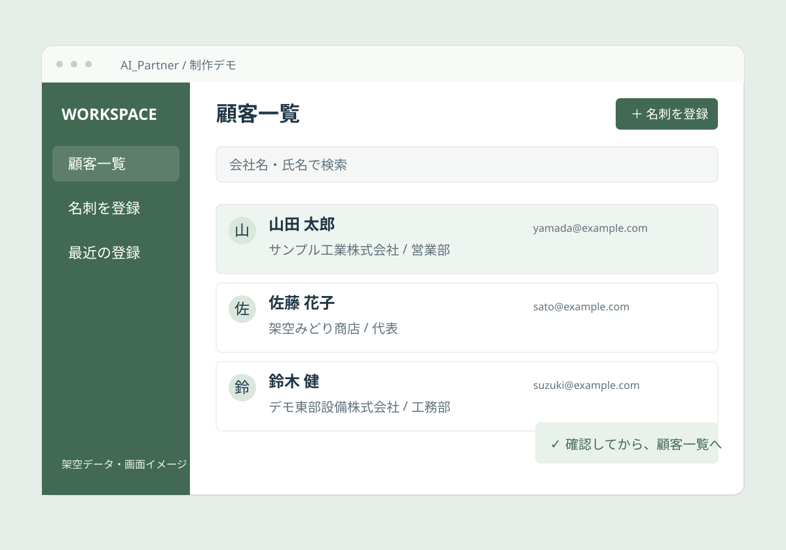

入力が後回しになる
商談の後、会社名・氏名・連絡先を顧客台帳へ手入力。名刺がたまるほど、転記の負担が増えていきます。
OUR WORKS 01 / CONTACT MANAGEMENT
名刺管理アプリ
撮った名刺を、確認して、顧客リストへ。紙に埋もれていた接点を、必要なときに見つけられる仕組みです。

01 / BEFORE
以下は想定する業務課題です。実在する顧客の導入前状況ではありません。
商談の後、会社名・氏名・連絡先を顧客台帳へ手入力。名刺がたまるほど、転記の負担が増えていきます。
「あの会社の担当者は誰だっけ」。名刺ケースや個人のメモを、順番に探す必要があります。
メールアドレスや数字の読み違いを、原本と照らし合わせて確認しています。
02 / SOLUTION
導入時に目指す業務の流れです。確認・修正の工程を残して設計します。
名刺をスマートフォンで撮影
AIで会社名・氏名・連絡先を抽出
原本と照合し、必要なら修正
顧客一覧に登録して検索
03 / TRY THE DEMO
架空データで操作を体験できます。撮影・AI読み取り・外部連携は行いません。入力内容は外部へ送信・保存せず、再読み込みすると初期化します。実際の個人情報は入力しないでください。
架空の顧客2件を表示しています。
04 / AFTER
測定件数：0件。実際の削減時間・削減率・月間削減時間は、まだ確認していません。
TIME SAVING SIMULATOR
作業時間を入力すると、計算結果を確認できます。
実測の成果や導入後の効果を保証するものではありません。
1件の単位：名刺1枚。改善後の時間には、人の確認・修正・例外対応も含めてください。
ご自身の条件を入力してください。
削減率 =（改善前の平均時間 − 改善後の平均時間）÷ 改善前の平均時間 × 100
月間削減時間 =（改善前の平均時間 − 改善後の平均時間）× 月間処理件数 ÷ 60
同じ作業範囲・同じ品質基準で測定し、件数、対象期間、利用ツール、データの状態、確認・修正時間、例外処理の件数と所要時間を記録します。エラーや失敗した処理も含めて平均を計算し、公開時に条件と根拠を併記します。
05 / OPERATION & SAFETY
導入時に確認する運用設計です。
本デモに認証・権限管理機能はありません。

保存先、AIサービスへの送信範囲、保存期間、バックアップ、権限管理は、導入前に確認します。実運用の認証連携・データ移行は別の開発範囲です。
LET’S TALK ABOUT YOUR WORK.
今の業務の流れや、お使いのツールからお聞きします。
御殿場・静岡東部の、小さな業務改善から。
初回相談無料。相談フォームに、事例名が入力されます。